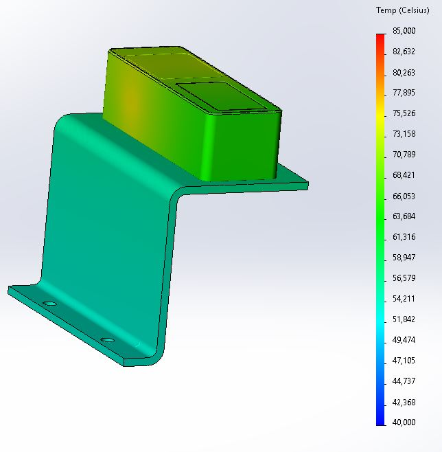
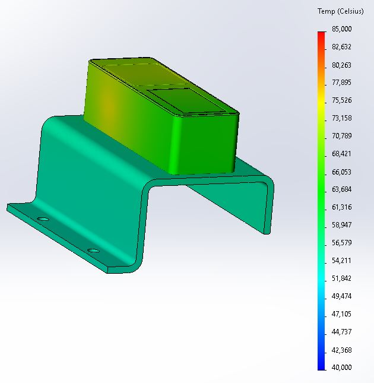
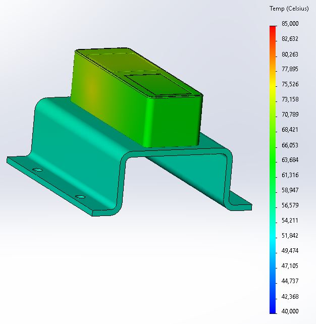
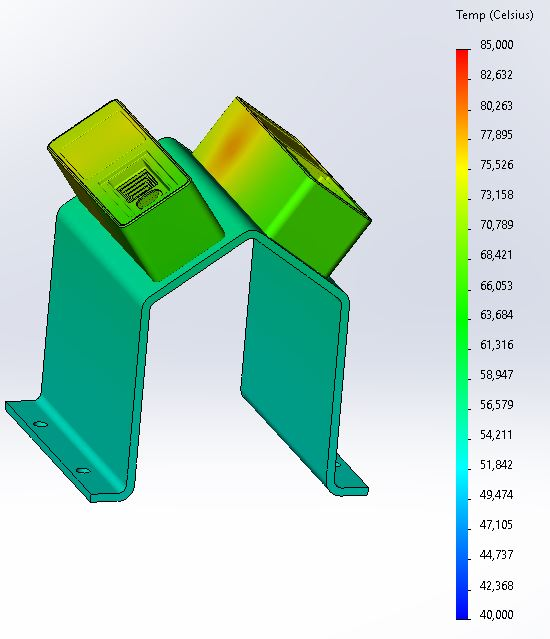
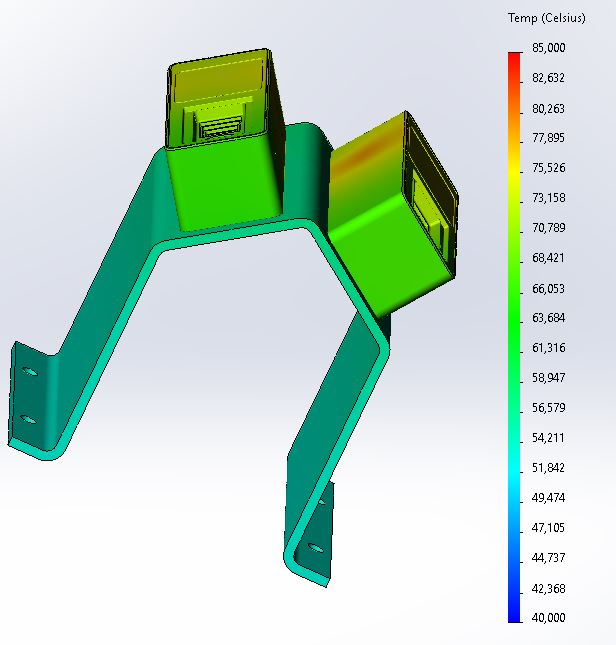

Heat dissipation guidelines
Highlights
The bracket connecting the O3R camera to the vehicle chassis should be at least 120cm²(10cm x 12cm) and 2mm thick.
The expected maximum thermal energy output of a VPU under full load is about
15 W. A typical thermal energy output of the system is between7.5 W to 15 W.Each O3R camera head has a thermal energy power output of about
8 Wunder full load, that is, at maximum framerate.
Power consumption
The datasheets for both the OVP8xx and O3R22x cameras can be found on ifm.com in the respective product pages, and gather the power consumption specifications.
The power consumption is dependent on the processing load and the number of connected cameras. It can be calculated with the following formula:
Power consumption [W] = 7,4 + n x ((FPS x 0,32) + 2,2); n = number of cameras; FPS = camera frame rate
Typical load cases are presented below:
Load |
Power consumption |
|---|---|
VPU only - no cameras |
7.4 W |
VPU only - one camera connected but IDLE |
~10 W |
VPU with one camera running at 20 fps |
~16 W |
VPU with six cameras running at 20 fps |
~60 W |
This power consumption is shared between the VPU and the O3R camera heads:
For the VPU, the maximum expected thermal energy output under full load is about
60 W. A typical thermal energy output of the system is between16 W and 60 W.Each ifm O3R camera head has a thermal energy power output of about
8 Wunder full load, that is at maximum framerate.
VPU mounting for heat dissipation
The thermal energy output of the VPU and cameras, as described above, needs to be dissipated. This includes:
A mounting bracket for the VPU device (an additional heat sync is usually not necessary),
A combined heat sink and mounting bracket for each O3R camera head
VPU heat sink
The VPU heat sink design can be fairly minimal. As long as the VPU is rigidly connected with enough clamping force, for example screwed down from the bottom side to a heat-dissipating material, the energy flow from the housing into the mounting plate combined with the heat dissipation via air convection will be adequate under all load scenarios.
In cases where heat dissipation is insufficient, for example, if air gaps exist between the mounting surfaces, the internal temperatures will exceed normal operation conditions and the CPU and GPU will automatically downclock to cool down.
Camera mounting for heat dissipation
The results of internal tests and simulations of heat sink designs are presented in this section.
Conditions of the simulation
Simulation parameters
Simulation boundary values |
value |
|---|---|
Maximum internal temperature (measured during tests) |
80 °C |
Maximum internal temperature (used during simulation) |
85 °C |
Maximum Ambient temperature |
40 °C |
Heat sink materials tested |
Aluminum AW 5754 and Steel 1.4301 |
Thermal energy output by the O3R camera head |
8W |
The camera heads are connected to a bracket of different sizes and material using the mounting threads with screws at the back of the housing.
The camera heads are positioned at different locations on the bracket material to test the energy conduction and transfer capabilities of the bracket:
At different maximum temperatures and thermal energy distributions,
For different thermal energy conduction inside the mounting bracket material.
Outcome of the simulation
Simulation test results are comparable to real-world measurements. For comparability, the simulation results had to be increased by +5 °C for the maximum internal temperature:
Real-world testing: maximum internal camera head temperature: 80 °C
Simulation testing: maximum internal camera head temperature: 85 °C
Example brackets
Single camera
Below the simulation results for a single camera mounting bracket with different shapes are shown. These example mounting brackets are a representation of the heat dissipation capabilities for different mounting bracket shapes.
All mounting bracket shapes are simulated under identical external conditions (see simulation conditions above).
  
Double camera
Below the simulation results for a double camera mounting bracket are shown. This simulation shows that if the surface area of the common mounting bracket is large enough and both cameras can dissipate their energy with equal thermal resistance into the mounting bracket, a double mounting bracket can be realized.
 
Simulation and testing results
The simulation results show that per O3R camera head a heat dissipating aluminum bracket area of 120 cm²(10 cm X 12 cm) is required to allow for enough energy transfer via heat convection. Bracket material thickness can be neglected. Aluminum brackets with a thickness of 1 mm - 2 mm are sufficient to transfer the thermal energy over the required heat sink area.
The ambient temperature for all tests was assumed to be 40 °C as stated in the manual.
Thermal energy distribution inside the mounting bracket only has a minor impact on the heat transfer as long as “good” energy distribution from inside the camera head to the complete surface of the bracket can be assumed. Aluminum material is preferable as it has a lower heat conduction resistance.
Additional resources: theory of heat sink design
When designing an appropriate heat sink for an O3R hardware please consider the following points:
Thermal barriers / thermal resistance
Thermal capacity
Heat dissipation via
heat convection
heat conduction
radiation
Heat sink design involves determining the appropriate size and shape of the heat sink based on the amount of heat that needs to be dissipated and the available space for the heat sink. The design must also take into account factors such as the thermal conductivity of the heat sink material, the airflow around the heat sink, and the thermal resistance between the component and the heat sink.
There are several types of heat sinks available, including passive heat sinks, which rely on natural convection to dissipate heat, and active heat sinks, which use fans or other mechanical means to enhance heat dissipation. Passive heat sinks are simpler.
Thermal barriers / thermal resistance
To use a heat sink, it must be mounted directly onto the component that generates heat.
The heat transfer resistance between the component and the mounting surface can be determined using the following formula:
R = ΔT / Q
where R is the thermal resistance (in °C/W), ΔT is the temperature difference between the hot and cold sides of the component (in °C), and Q is the heat dissipated by the component (in W).
To calculate the heat dissipated by a component, you can use the formula:
Q = I²R
where Q is the heat dissipated (in W), I is the current flowing through the component (in A), and R is the resistance of the component (in Ω).
Once you have determined the thermal resistance of the component, you can use it to calculate the temperature rise of the component under different operating conditions. For example, if you know the ambient temperature and the heat dissipated by the component, you can calculate the temperature rise of the component as:
ΔT = Q x R
where ΔT is the temperature rise (in °C), Q is the heat dissipated (in W), and R is the thermal resistance (in °C/W).
Thermal energy dissipation via air convection
Heat transfer by air convection can be determined by using the following formula:
Q = hA(Ts - T∞)
where Q is the rate of heat transfer, h is the convective heat transfer coefficient, A is the surface area of the object, Ts is the temperature of the object’s surface, and T∞ is the temperature of the air surrounding the object.
The convective heat transfer coefficient for air convection, h, depends on several factors, including the properties of the air, the velocity of the air, the shape and orientation of the object, and the temperature difference between the object and the air. The convective heat transfer coefficient can be calculated using empirical correlations or experimental data.
Two cases are distinguished:
natural convection (that is, where air motion is driven solely by temperature differences)
forced convection (that is, where air motion is generated by a fan or other mechanical means)
Thermal energy dissipation via heat conduction and thermal energy capacity
Heat dissipation via conduction is the transfer of heat from a region of high temperature to a region of low temperature through a medium or material. Heat conduction occurs when there is a temperature gradient within the material, meaning that the temperature varies across the material in space. The direction of the heat flow is always from higher temperature to lower temperature, and the rate of heat transfer is proportional to the temperature difference.
This works as long as there is potential difference between different parts of the heat sink. Once the heat sink has reached a equilibrium state no additional energy can be dissipated away from the source anymore. For this reason heat dissipation via conduction is only a short term solution. Rather then optimizing heat sinks and mounting designs for larger mass, i.e larger capacity, optimize for surface area to allow for energy transfer via air convection.
Thermal energy dissipation via radiation
Thermal energy dissipation via radiation can be determined using the Stefan-Boltzmann Law, which relates the amount of energy radiated by an object to its temperature and surface area. The law states that the power emitted per unit area by a blackbody:
P = σ * A * T^4
where:
P is the power emitted per unit area,
σ is the Stefan-Boltzmann constant (5.67 x 10⁻⁸ W/m²*K⁴),
A is the surface area of the object, and
T is the absolute temperature in Kelvin.
The law can still be used for non-perfect blackbodies by introducing an emissivity factor, which takes into account how well the object absorbs and emits radiation relative to a perfect blackbody. The formula becomes:
P = ε * σ * A * T^4
where:
ε is the emissivity factor, which ranges from 0 to 1.
As can be seen from the formulas above the energy dissipation via conduction is proportional to the fourth power of its absolute temperature. For this reason it can be disregarded.